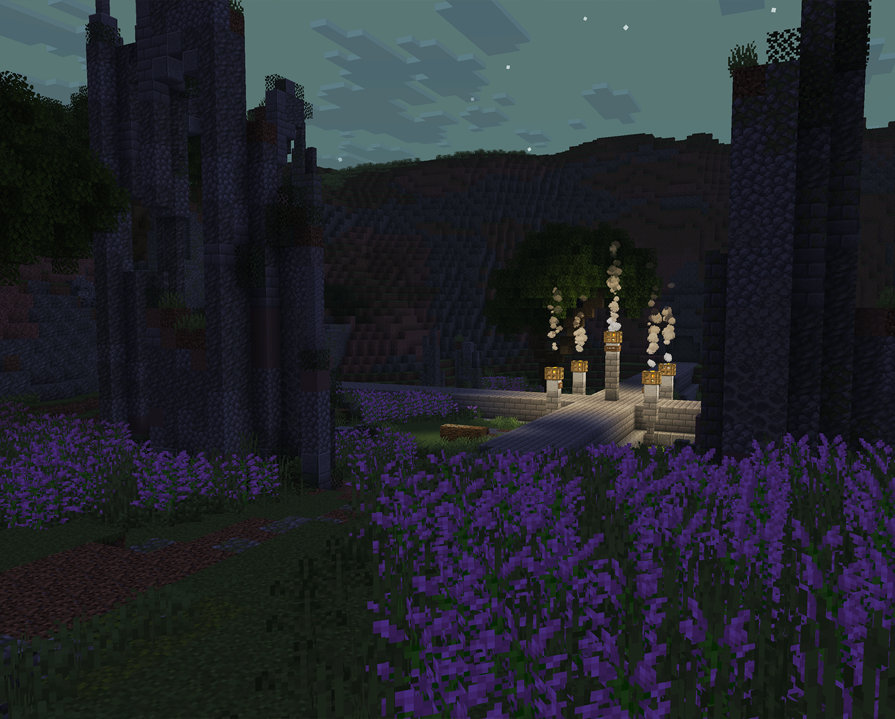

Anthology is a collection of Complete the Monument (CTM) maps created for modern Minecraft by Syracuse-based graphic designer Joey Sweener.
Evoking the classic feeling of CTM maps from Minecraft's heyday, the series focuses on exploration through intricately-built dungeons and structures, making minimal but tasteful use of data- and resource-packs to provide one-of-a-kind gameplay without straying far from the core survival Minecraft experience.
Chapter III: Luminary is currently in development.
